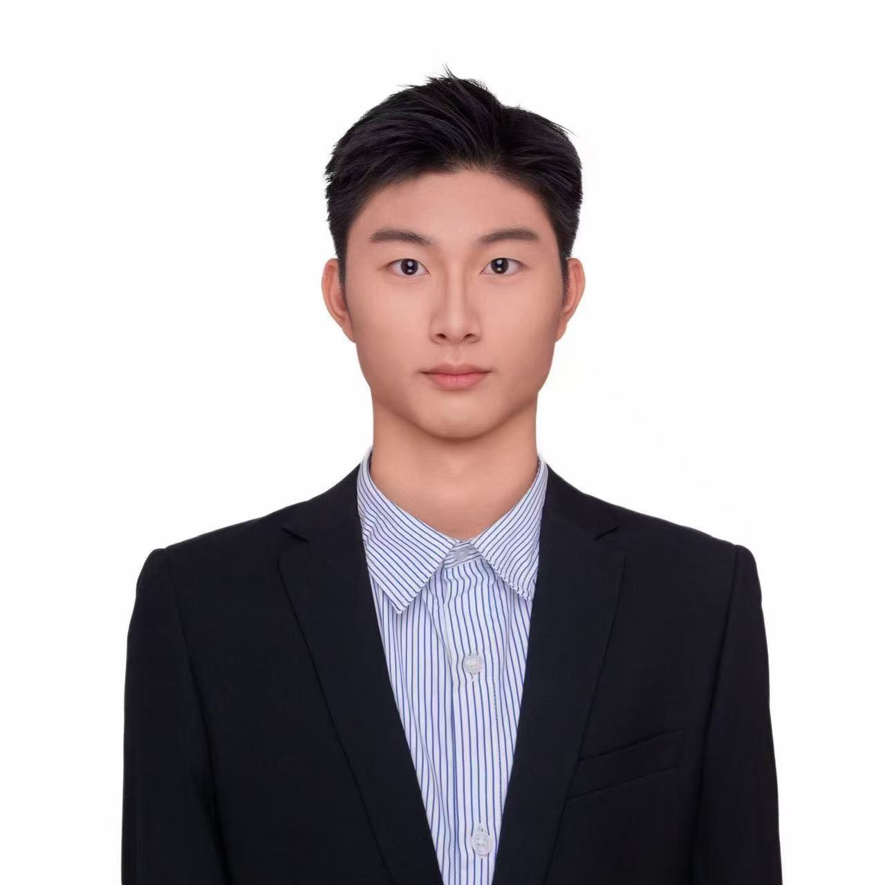

个人主页 Personal Site
Junyu Chen
人工智能专业 · 广州航海学院 / 广州交通大学（筹）
Artificial Intelligence Major · Guangzhou Maritime University / Guangzhou Jiaotong University (Proposed)
我目前就读于广州航海学院 / 广州交通大学（筹）人工智能专业，研究兴趣主要集中在人工智能、 工业异常检测与 AI 视觉方向。在研究与学习中，我重视严谨的实验过程、可靠的结果验证， 也始终把科研精神与学术道德放在非常重要的位置。
I am currently studying Artificial Intelligence at Guangzhou Maritime University / Guangzhou Jiaotong University (Proposed). My interests focus on artificial intelligence, industrial anomaly detection, and AI vision. In both research and engineering practice, I value rigorous experimentation, reliable validation, and a serious commitment to academic integrity.
研究兴趣：人工智能 · 多模态 · 工业异常检测 · AI视觉
Research Interests: AI · Multimodal Learning · Industrial Anomaly Detection · AI Vision